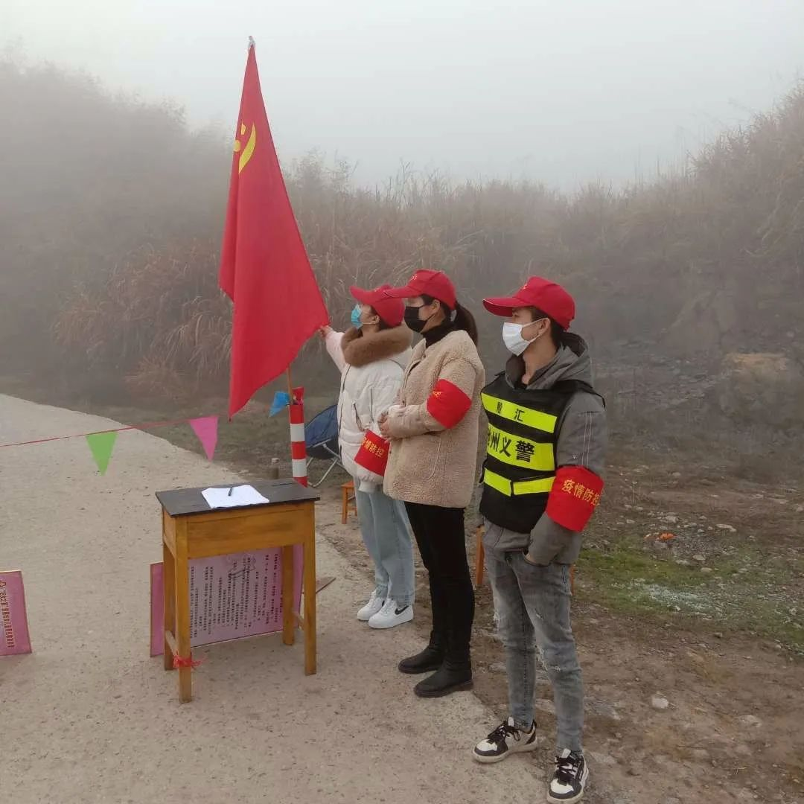

口述 | 公益人周健：怎样更实在地帮助抗疫中的英雄们
原文链接 备份链接 做公益，只凭“鸡血”“热情”，这是不行的。 口述 | 周健（北京感恩公益基金会理事长） 整理 | 王煜 这些天以来，许多事情让我非常揪心。 湖南衡山县的乡镇医生宋英杰，连续十几天在抗疫岗位上工作，过劳去世，因公殉职时 …

编者按：饶志雄是当代中国社会一个缩影。一个“80后”乡里娃，靠个人奋斗，成长为上海知名学府的学院党委副书记。春运，携妻儿回老家过年。本是衣锦还乡，却遇重大疫情，遇到乡村治理的重大挑战。来自大上海高校的饶书记，以党员志愿者的身份，自愿做一名“小班长”，在村委会和上级党委的领导下投入抗疫工作，值得点赞。同时，饶老师的例子，更可以给人以启示——城市如何反哺乡村？特别是该如何在精神上、思想上反哺乡村……
口述 | 饶志雄
整理 | 姜浩峰
我是华东理工大学资源与环境工程学院党委副书记饶志雄。我的老家在湖北省咸宁市崇阳县白霓镇金星村第十组。我们金星村是县里疫情较为严重的地方。我们全村10个村民小组、715户、2748人，早期发现新冠肺炎确诊病例3人。
今年1月18日，我带着太太和孩子，自驾车从上海回老家过年。在离开上海前，我已经听说武汉有不明原因肺炎，所以我开车走杭瑞高速，经过江西，没有经过武汉，开了11小时车，就回到了咸宁老家。回到村里，第一时间我们在村里做了报备——从上海回家，没去过武汉。到家以后没几天，听说武汉封城了。
我们咸宁管控也开始严厉起来。我接到了村两委和驻村工作队的通知，说要召集党员、退休干部等志愿者，针对农村居住较为分散的实际，按照村民居住地段和亲疏关系，采取约十户为一组、一组一个联防长和N个志愿者的方式，在全村共划定联防区48个。我马上主动报名参与。

饶志雄（左）在家门口参与家乡抗疫工作
村委会派我三个活——
一是看守一条已封闭的道路，防止村内外人员翻越。我负责的就是距离我家最近的那条路。
二是佩戴“党员先锋、决战决胜”袖章，跟随其他工作人员在村里巡逻，并进行政策宣传，对在规定地方未戴口罩、聚集聊天、打麻将打牌等不当行为进行劝阻。在具体工作中，我们发现有人聚众打麻将的话，会劝阻，并要求他们第二天和我们一起到村里参与“反面”教育工作，在我们巡逻的过程中，这些人敲锣打鼓告诉大家不可以打麻将。在具体的工作中，也有人家不满，对我们态度恶劣。遇到矛盾我们就报警，或者到派出所处理。
三是担任村里11户人家的十联户联防长。我觉得这项工作，在乡间抗疫工作中，显得特别重要。我要做到向大家宣传、督促疫情防控相关要求，关心11户家庭的生活情况，及时向村里负责采购的工作人员汇报情况。

饶志雄（右）参与联防联控
在抗疫期间，“咸宁发布”报道了我们村的情况，这样写道——
每个联防组设立一个联防长，并建立一个微信群。联防长和志愿者由该村的党员、大学教授、退伍军人、企业家、乡贤、村组干部等有威望、有能力、有责任心的人担任。
我们村现在采取统一采购的模式，各家把生活所需购买物品清单给村里，村里派出指定的采购人员到附近的镇上采买。主要是蔬菜、粮油、药品、奶粉、煤气等物品。我们金星村距离县城有八公里，一般采买物品就到附近的白霓镇。总的看，在抗疫期间，村民在家的物质生活没什么问题。不过我也注意到村里有人生活还是比较困难的。比如我家附近有户人家，一个快五十岁的女同志，老公死了，她的小孩在外打工，几年不跟她联系。而她本人身体也不好。由此我就注意到村里确实还有一些人，和她类似，在物质生活和精神生活上都有困难，特别是一些老人，更困难。
我们金星村是个大行政村。我家在第十组。我没机会跑遍所有组，于是掏了2000块钱给村里，请村里代为采买一些米啊、食用油啊什么的，资助村里有困难的人家过年。我们学院的书记修光利听说后，也给我微信转了2000元，让我捐给困难的乡亲。这样，我们一共捐了4000元。
饶志雄将华理心理咨询中心老师徐玉兰拉到家乡心理疏导群
村民精神生活上的困难怎么解决呢？一次，我们这里的镇长来到村委会，看到我正在和大家一起开展工作，知道我是在上海的华东理工大学工作，就跟我说：“饶老师，你看我们现在抗疫期间，大家都宅在家里，有些村民确实可能存在心理焦虑。我们镇的疫情防控群里有各个村村干部，也有一些妇委会主任啥的在群里。你看是不是能请专业老师帮帮我们？”我一听，确实和我了解到的村民需求应和了，于是我把我们华东理工大学心理咨询中心徐玉兰老师拉入我们镇防疫期间心理疏导群。徐老师进群，获得了我老家村干部们的大力欢迎。我觉得，这是送一门新的知识下乡啊！

饶志雄录的微课截屏
在老家过这么一个寒假，确实特别。在金星村我家里没装宽带。但我还是得上网啊。现在学校提倡任课教师录课，3月开展网络教学，学校安排我录制一节“战疫有我，为心导航”辅导员系列微课程，提升全体辅导员在疫情防控期间的战“疫”能力，更好地服务学生。在老家期间，我还得和其他老师交流，和同学交流。作为学院学生工作负责人，我还必须迅速按照学校统一部署建立辅导员-班委-学生小组三级联动的网络化管理反馈机制，每日进行全院1223名学生的健康报送。
好在我的手机流量充足，没有宽带也不影响工作开展。
平平安安群
不得不说，新冠肺炎疫情突如其来、态势凶猛。目前，我们华东理工大学资源与环境工程学院共有40名师生暂留湖北省。我想，我们暂留湖北的，可能会是全国最后回到上海的那批人。在武汉封城，也是我们回到湖北以后，我第一时间将身处湖北的同学拉入一个微信群，一个qq群，分类指导，并取群名为“平平安安”，鼓励大家不焦虑、不恐慌、不信谣、不传谣，共同为武汉加油，为湖北加油，为中国加油！我还对重点学生进行“键对键”关怀，通过私聊的方式安抚他们的心理。

临时党支部在行动
我们学院暂留湖北的师生还成立了临时党支部。党支部在线上开展党课学习；临时党支部的党员在自己所在的地市，在线下身体力行参与疫情防护工作，贴心录制健康防控宣传口号，并结合学校开展的“空中”主题班会活动，在各自所在的“云”班会中分享心得感悟，送上假期学习加油包，将乐观的精神与必胜的信念进行传递。

华理资环学院学生党员参加家乡抗疫工作
我是1996年中考考上了咸宁市的高中，这才离开乡村的。1999年我考到华东理工大学。当时从武汉坐火车到上海，整整17个小时。现在武汉到上海高铁只要四个多小时。
2003年我本科毕业，当时上海有个本科生三加二保研政策，就是本科毕业留校当两年辅导员，可以保研。之后，2008年我研究生毕业，继续在学校工作。我的太太也是湖北人，但不是我们咸宁的。这次过年，我们一起回我老家。我们家大娃9岁，二娃13个月大。现在面临着的一个问题是——上小学三年级的大娃接下来该怎么办？现在上海推出中小学“网上开学”，还是挺及时的，我们可以用手机流量看到。我们现在希望，在党和政府的领导下，尽早抗疫成功，各个地方可以早些解封，生活都能正常起来……

征集令
《新民周刊》现面向全国征集新冠肺炎采访对象和真实故事：
如果你是参与抗击新冠肺炎疫情的医护人员或其家属，我们希望聆听你的“战疫”故事，也希望传达你的诉求。
如果你是确诊、疑似患者本人或家属，我们希望了解你和家人如何“抗疫”的过程，让外界了解你的真实经历。
如果你是疫情严重地区的普通市民，我们希望展现你的乐观，并倾听你所需的帮助。
如果你是公共服务人员或各类捐助者，我们希望看到你的“最美逆行”，记录下你的无私。
……
抗击新冠肺炎疫情，我们诚征对疫情了解的社会各界人士，提供相关线索，说出你的故事，让我们用新闻留存这一切。
《新民周刊》新冠肺炎线索征集值班编辑联系方式（添加时请简要自我介绍）：
周一：应 琛 微信号：paulineying0127
周二：金 姬 微信号：gepetta
周三：黄 祺 微信号：shewen-2020
周四：周 洁 微信号：asyouasyou
周五：孔冰欣 微信号：kbx875055141
周六：吴 雪 微信号：shyshine1105
周日：姜浩峰 微信号：jianggeladandong
✳如你需要捐赠物资，可与以下两位工作人员联系:王勇：WangYong-SH 吴轶君：rommy150708（添加时请注明“捐物资”，方便工作人员快速通过您的申请，谢谢。）
新闻是历史的底稿，你们是历史的见证者。期待你的故事、你的线索！

▼
大家还都在看这些
▼
新民周刊所有平台稿件， 未经正式授权
一律不得转载、出版、改编
或进行与新民周刊版权相关的其他行为，违者必究


原文链接 备份链接 做公益，只凭“鸡血”“热情”，这是不行的。 口述 | 周健（北京感恩公益基金会理事长） 整理 | 王煜 这些天以来，许多事情让我非常揪心。 湖南衡山县的乡镇医生宋英杰，连续十几天在抗疫岗位上工作，过劳去世，因公殉职时 …
原文链接 备份链接 从1月23日“封城”到元宵节，已经过去整整17天。即使我每天忙于记日记，也觉得时间过得很快啊。 过去我要早起，6点起床，7点到办公室，不堵车。现在则是天天睡到自然醒，有点提前退休的感觉。虽然我还有两年上班的时间。 …
原文链接 备份链接 截至2月20日24时，全国有湖北、浙江、山东五所监狱发生了新冠肺炎感染疫情，这些均为输入性病例，确诊的505人中暂无死亡 图/Unsplash 文 |《财经》记者 王丽娜 俞琴 辛颖 黄姝静 编辑 | 鲁伟 截至2 …
原文链接 备份链接 有时候半夜突然想到某个可能的漏洞，惊出一身冷汗。 记者 | 黄 祺 抗击新冠肺炎疫情的紧要关头，医院不能失守。 中国疾控中心2月17日的一份研究报告显示，全国已有3019名医务人员感染了新型冠状病毒，其中包括1716 …
原文链接 备份链接 整理 | 河 西 截至2020年2月22日12点，在这次疫情中，累计报告的死亡病例已经达到了2348人。 这些鲜活的生命，在一次突如其来的疫情中倒下了。他们中有普通人，也有院长、导演、院士、画家……很多都是各行各业中 …